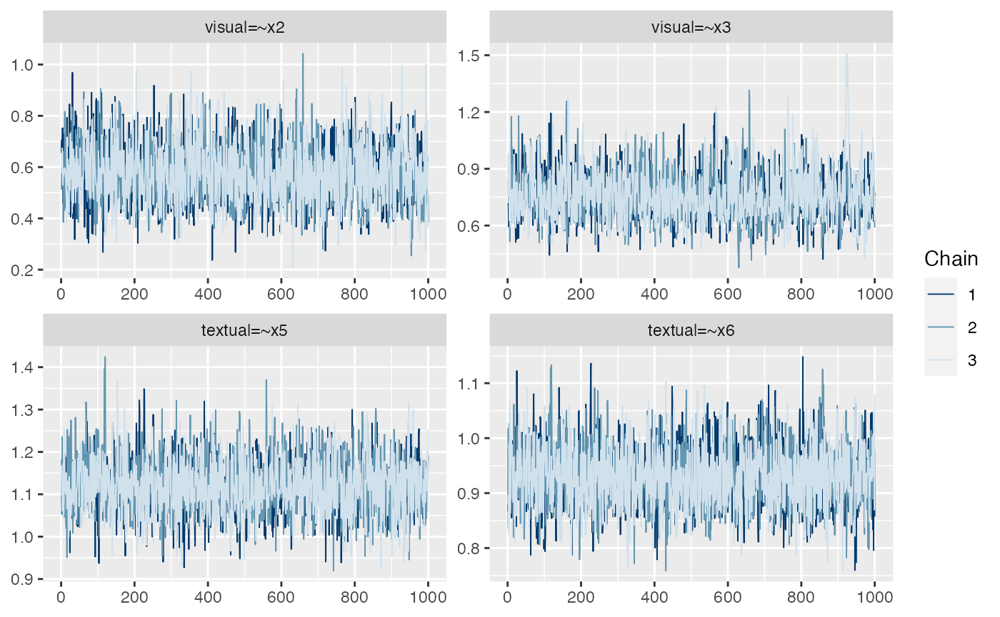
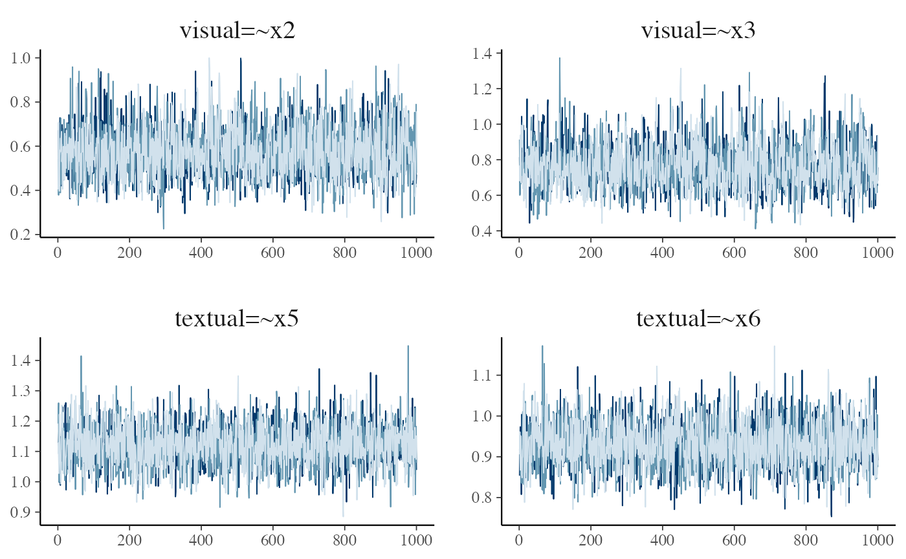

A plot() method exists for blavaan objects,
with this method making use of the bayesplot package (Gabry and Mahr 2021). We provide details here
about how this functionality works. We will use a 3-factor model for
demonstration:
HS.model <- ' visual =~ x1 + x2 + x3
textual =~ x4 + x5 + x6
speed =~ x7 + x8 + x9 '
fit <- bcfa(HS.model, data=HolzingerSwineford1939)Basics
Because many blavaan models will have many parameters, users
generally need to specify which parameters they wish to plot. This is
accomplished by supplying numbers to the pars argument,
where the numbers correspond to the order of parameters from the
coef() command (the numbers also appear in the
free column of the parameter table). Users must also
specify the type of plot that they desire via the plot.type
argument. So, for example, a trace plot of the first four model
parameters looks like
plot(fit, pars = 1:4, plot.type = "trace")
Many other plot types are available, coming from the
bayesplot package. In general, for bayesplot functions
that begin with mcmc_, the corresponding
plot.type is the remainder of the function name without the
leading mcmc_. Examples of many of these plots can be found
in this
bayesplot vignette.
Customization
Users may wish to customize some aspects of the resulting plots. For
this, the plot() function will output a ggplot
object. This makes it possible to modify the plot as if it were any
other ggplot object, which allows for many possibilities. One
starting point for exploring ggplot2 is here.
p <- plot(fit, pars = 1:4, plot.type = "trace", showplot = FALSE)
p + facet_text(size=15) + legend_none()
Alternatively, users may wish to create a plot that is entirely
different from what is available via plot(). This can be
facilitated by extracting the posterior samples or the Stan model, via
blavInspect():
## list of draws
## (one list entry per chain):
draws <- blavInspect(fit, "mcmc")
## convert the list to a matrix
## (each row is a sample,
## each column is a parameter)
draws <- do.call("rbind", draws)
## Stan (or JAGS) model
modobj <- blavInspect(fit, "mcobj")